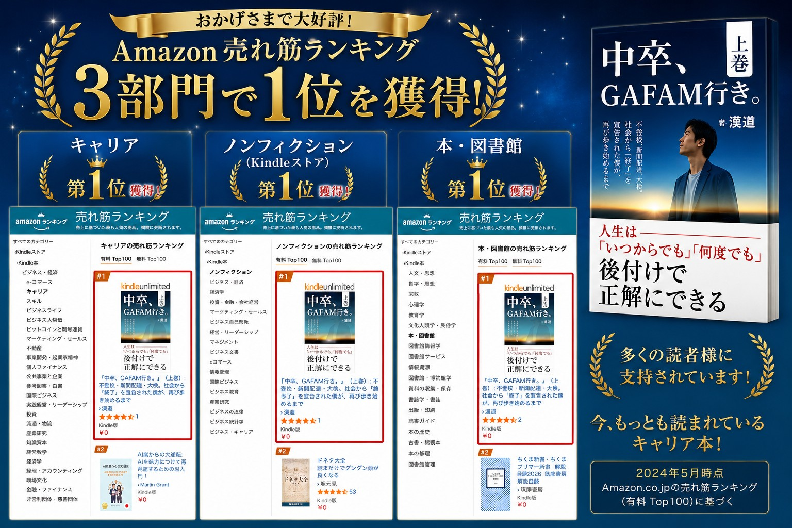
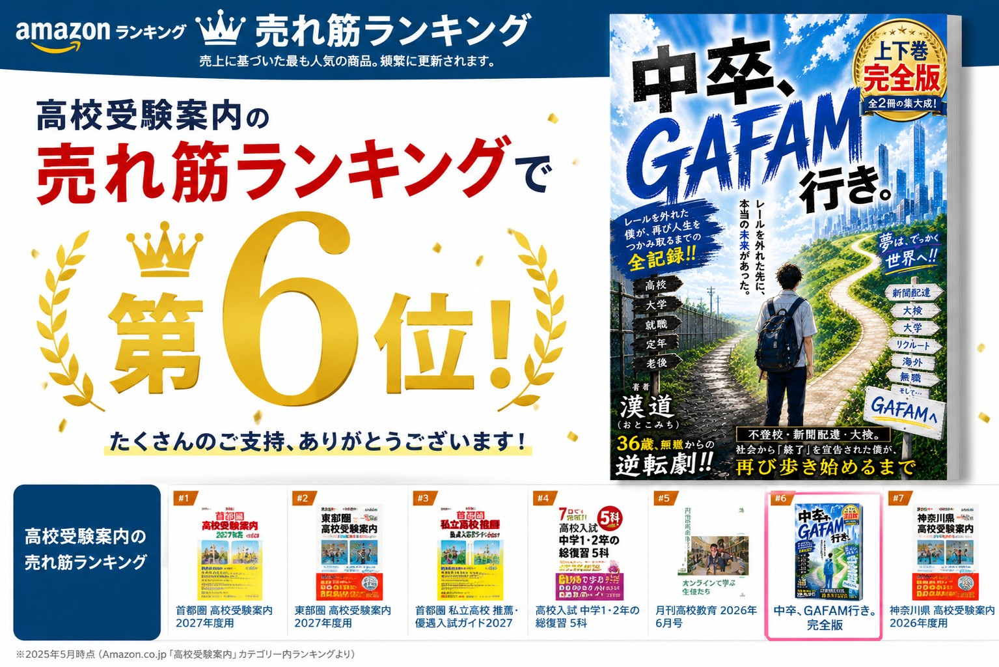
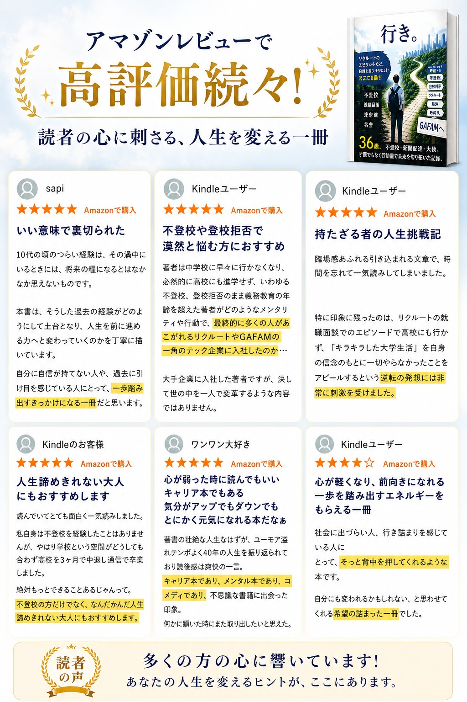

Amazon出版代行サービス
あなたのこれまでの「脱線」と「彷徨い」を、誰かの勇気に変える。
1. あなたの「脱線」こそが羅針盤
失敗や遠回りした経験は、同じ迷いの中にいる誰かにとって最も信頼できる地図になります。
2. 出版は最強の名刺になる
Amazon出版という事実は専門性を物語ります。相手の信頼を一瞬で勝ち取る最強のツールです。
3. リスクゼロの資産化
商業出版の在庫リスクは不要。Amazon出版なら1冊単位で発行でき、リスクを抑えて知見を資産化できます。
4. 元Amazonコンサルの伴走
Amazonのアルゴリズムを知り尽くしたプロが、売れるための泥臭い戦略を直接投影します。
SERVICES：完全丸投げ5ステップ
PRICING：料金プラン
| 項目 | 出版コンサル | フルサポート |
|---|---|---|
| 執筆〜出版まで一括代行 | - | ✓ |
| 出版後のご相談サポート | - | ✓ |
| アドバイスのみ | ✓ | - |
| 料金（税別） | 1万円〜 | 30万円〜 |
実績サンプル：Amazon A+コンテンツ
読者の購買意欲を高めるリッチなページ制作も代行可能です。



VOICES：お客様の声
“出版前とは信頼感がまったく違います。”
— コンサルタント・40代男性
“インタビューだけで形になり、自信につながりました。”
— 起業者・30代女性
著書紹介・実績
「理論ではなく、現場で勝ち抜いたリアルな戦略をあなたの出版に。」

講演・講義およびメディア掲載実績
「本」を武器に、全国の現場で「言葉」を届けてきた実績。
私自身、自らの著書を出版し、その内容を軸に全国の自治体シンポジウムや大学講義で10年以上にわたり登壇を続けてきました。「本が名刺代わりになる」という効果を、私自身の実践を通じて証明し続けています。
メディア掲載
- 日本経済新聞 朝刊1面：「若者が問う（5）地方は都落ちじゃない ―『等身大』が活力を生む―」他、多数
主な講演・登壇実績
- 長野県主催「若者とともに進める地方創生〜若者タウンミーティング〜」全体ファシリテーター（阿部守一知事と共演）
- 新潟新聞主催「地方創生の今」シンポジウムパネリスト
- 九州 移住文化展フェア パネルディスカッション登壇
- 福岡県主催「商工会議所向け講演」地域活性化に関する講演（約300名対象）
- その他、「地方創生」「働き方」をテーマとした企業向けセミナー等多数
教育機関・講義実績
- 信州大学：「キャリア論」にて約10年間、継続的にゲスト登壇
- 福岡大学：「地域論」等、複数の講義・セミナーに登壇
- 広島県立大学：「キャリア論」ゲスト講師
「出版」は、過去を清算し、次のステージへ向かうための最高のアクションです。
出版しただけで人生が変わるような、魔法のような近道は存在しません。私が書き上げたその一冊が、誰かの羅針盤となり、キャリアを拓く「最強の名刺」となったのは、私自身の泥臭い実践の積み重ねがあったからです。
あなたの経験を形にすることは、あくまでスタートラインです。その一冊をどう活用し、どう繋げていくか。その道のりにおいて、私自身の実践で培った知見を共有し、泥臭く並走します。
あなたの経験を、誰かの勇気に変える一冊を、一緒に形にしませんか？